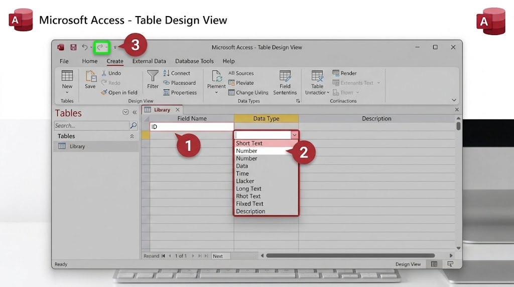

الجدول هو المكان الذي تُخزَّن فيه البيانات فعليًا، منظّمة على شكل صفوف وأعمدة. يُسمّى كل عمود حقلًا (Field)، ولكل حقل نوع بيانات يحدد نوع المعلومة التي يقبلها، كالنص أو الرقم أو التاريخ.
سننشئ الآن جدول "Books" (الكتب) بثلاثة حقول أساسية: عنوان الكتاب، والمؤلف، وسنة النشر.

- في جدول "Table1" المفتوح، اضغط على تبويب "Design View" (أسفل يسار الشاشة أو من تبويب Home).
- عندما يُطلب منك اسم للجدول، اكتب "Books" واضغط موافق.
- في عمود "Field Name"، اكتب أول حقل: "عنوان الكتاب"، وفي عمود "Data Type" اختر Short Text.
- في السطر الثاني، أضف حقل "المؤلف" بالنوع نفسه Short Text.
- في السطر الثالث، أضف حقل "سنة النشر" واختر نوع البيانات Number.
- احفظ الجدول (Ctrl+S)، ثم انتقل إلى عرض "Datasheet View" وابدأ بكتابة بيانات تجريبية.
هل تعلم؟
يمنع اختيار نوع البيانات الصحيح وقوع أخطاء لاحقًا؛ فمثلًا لو اخترت "Number" لحقل السنة، يرفض Access تلقائيًا أي محاولة لكتابة نص فيه.
جرّب بنفسك
أضف إلى جدول "Books" ثلاثة صفوف بيانات تجريبية (ثلاثة كتب مختلفة بعناوين ومؤلفين وسنوات نشر حقيقية).
تلميح
في عرض Datasheet View، اضغط على الخلية الفارغة أسفل كل عمود وابدأ بالكتابة؛ يحفظ Access كل صف تلقائيًا بمجرد الانتقال إلى الصف التالي.